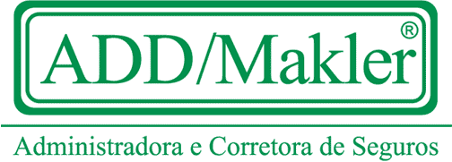

s0rry... BlowBack 0wn3d y0u!
of
Silver Lords
Nosso objetivo não é o de destruir e sim o de mostrar as falhas dos sistemas
Caro Admin.: Nada foi deletado, Caso encontre problemas com esse site entre em contato comigo que eu lhe ajudo e tb de cortesia, conserto as falhas da segurança dele... : )

h0h0h0 q pena... tirou férias... volte outro dia! : )
Para pensar:
Coincidência ou não, mas desde o Descobrimento, o Brasil é um país ligado ao PC:
1. Foi descoberto por PC (Pedro Cabral)
2. A primeira carta foi escrita por PC (Pero Caminha)
3. É conhecido como PC (País do Carnaval)
4. No Rio, a sede do governo era no PC (Palácio do Catete)
5. Atualmente, a sede do governo é no PC (Planalto Central)
6. Recentemente foi governado por um PC (Presidente Collor)
7. Que se apaixonou por um PC (Pernas da Cunhada)
8. E que estava envolvido com um outro PC (PC Farias)
9. Que foi denunciado por um outro PC (Pedro Collor)
10. E nós, PC (Pobres Coitados), continuamos levando PC (Pau no Cu)
enquanto outros PC (Políticos Corruptos) acham que aqui é um PC (País do
Caralho)
hehe q sem graça!!! ptzzz prometo melhor da próxima vez... : )
Admim.: Nothing was deleted. Only the invasion's log..
Greetz.: F1r3h3ll, Id3ntC, N3xus, MasterBill, B_Real, Becamp, b1n4ry c0d3, Data Cha0s, Prime Suspectz, IZ C0rp, |[cDM]| Insecure Network, Hacker.com.br, Alldas.de, Securenet.com.br, ASH, GForce(HI...), AntiHackerLink(Hi...), WFD(Hi...), pro pessoal do IRC, Brazilian Hackers and for that I can have forgotten...
Fuckz.: O governo do Brasil, and For all americans that don´t like brazilian people... : )
We're:
Lord Choo3s - ScorpionKTX -BlowBack